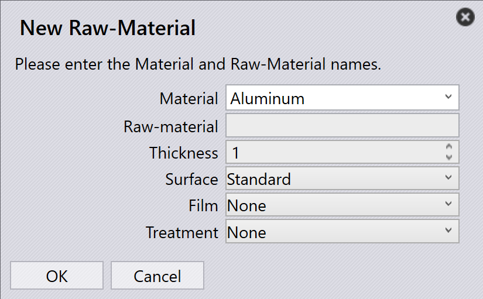
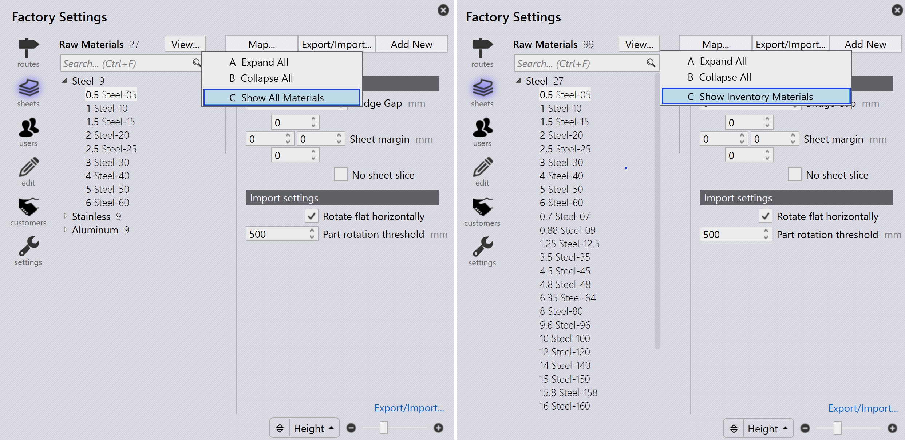
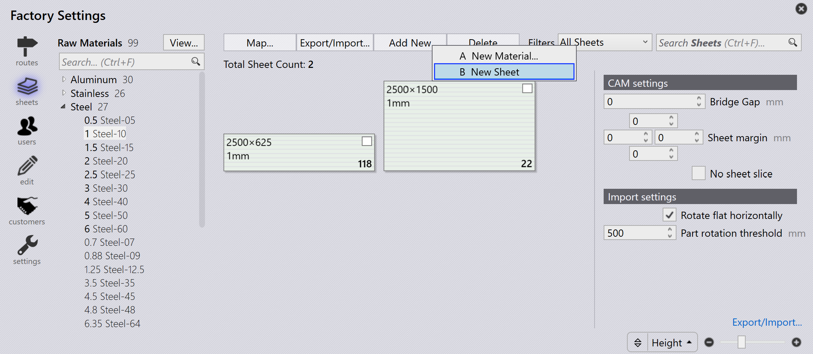

새 재료 및 시트 추가
시트 관리는 공장 아이콘을 클릭하고 *시트들*를 선택하여 액세스할 수 있습니다. 이는 설정된 재료의 개요를 제공합니다. 왼쪽에 나열된 재료를 선택하면 사용 가능한 시트, 두께, 크기 및 수량이 표시됩니다.
새 재료를 추가하려면 공장*의 *시트들 페이지에서 새 항목들 추가 → *새 재료…*을 클릭합니다.

재료, 미가공 재료, 두께 및 재료 매개변수를 입력합니다. *OK*를 클릭합니다.

재료 보기
공장 → 시트들의 *_View… 옵션에는 다음 옵션이 있습니다:
-
*모두 확장: 모든 재료 카테고리를 확장합니다.
-
*모두 접기: 모든 재료 카테고리를 축소합니다.
-
*모든 재료 보기: 시트 재고와 관계없이 모든 원자재를 나열합니다.
-
*재고 재료 보기: 시트 재고가 있는 원자재만 나열합니다.
| 굵게 표시된 원자재 두께는 시트 가용성을 나타냅니다. |

시트 추가
새 시트를 추가하려면 공장*의 Sheets 페이지에서 *새 항목들 추가 → *새 시트를 클릭합니다. 시트 매개변수를 수정합니다.


-
검색… (Ctrl+F) (Ctrl + F)…: 크기, 그레인, 주석, 열 번호, 잔여물 및 증발에 대해 시트를 필터링합니다.
-
Slider (+ / –): 시트 미리보기의 확대/축소 수준을 조정합니다.
-
Filter by: 선택한 옵션(폭, 높이, 영역, 수량, Grain 또는 타입)에 따라 시트 미리보기를 제어합니다.
|
재료 또는 시트의 편집 또는 삭제는 부품이 해당 재료에 할당되거나 레이아웃이 해당 시트에 네스트되기 전에만 수행할 수 있습니다. 이 단계에서는 재료 이름을 변경할 수 없습니다. 따라서 새 재료를 만들어야 합니다. |